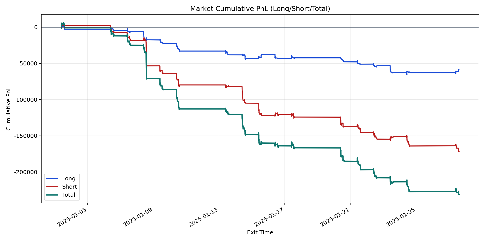
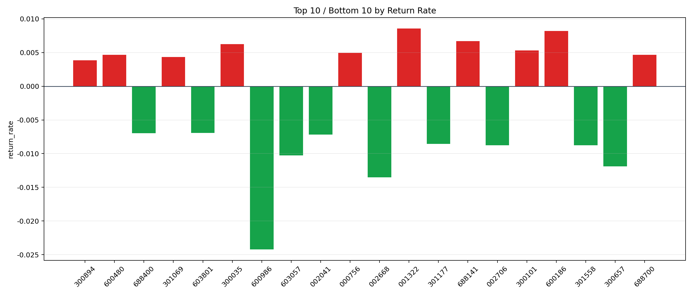

| repo_root | /home/haoranyou/data/output/dynamic_AUM_TAKER_index1000 |
|---|---|
| period_months | 1 |
| period_label | 2025-01-03_to_2025-01-27 |
| start_time | 2025-01-03 09:50:27 |
| end_time | 2025-01-27 14:44:07 |
| n_trades | 8762 |
| n_symbols | 218 |
| total_pnl | -230691.37150000117 |
| long_total_pnl | -59025.03409999907 |
| short_total_pnl | -171666.3374000021 |
| total_entry_notional | 158517212.0 |
| long_entry_notional | 55075959.0 |
| short_entry_notional | 103441253.0 |
| total_return_rate | -0.0014553080298939473 |
| long_return_rate | -0.0010717023393092269 |
| short_return_rate | -0.0016595539247770143 |
| top_symbols_by_return | ["001322", "600186", "688141", "300035", "300101", "000756", "688700", "600480", "301069", "300894"] |
| bottom_symbols_by_return | ["600986", "002668", "300657", "603057", "301558", "002706", "301177", "002041", "688400", "603801"] |

